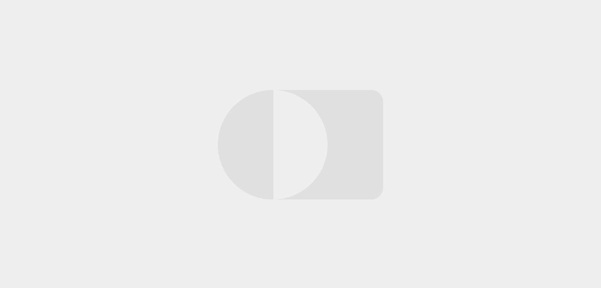

Redesign Baseline Registry
Duration: 2 months
My Role: UI/UX Designer
To make it easy and engaging for people to participate in clinical research.

notification_important
To comply with my non-disclosure agreement, I have omitted and obfuscated confidential information in this case study. All information in this case study is my own and does not necessarily reflect the views of Verily.
What is it?
Project Baseline by Verilyopen_in_new is the quest to collect comprehensive health data and use it as a map and compass, pointing the way to disease prevention. People can contribute and participate in clinical research through Project Baseline(PB). Likewise, through PB, Verily is building a connected ecosystem, engaging partners across healthcare, life sciences and technology.
Overview
PB was originally created to recruit 200 people with diabetes to test a smartphone app and healthcoaching program. However, according to its increased number of partnerships and clinical studies, we were restructuring the marketing website and enrollment and building a new portal(MVP) to support our members in more scalable, comprehensive and engaging ways.
The Team
2 designers, 1 product manager, 6 engineers, 2 UX researchers, 1 content writer
My Role as UI/UX Designer
I inherited this project from designers who previously worked on the initial draft for PB marketing website and enrollment. Collaborating with cross-functional teams, I contributed to the next version Baseline Registry by:
Designing and iterating the interface through multiple rounds of research and tests
Designing and iterating the interface through multiple rounds of research and tests
Unifying the visual language across platforms and creating UI components using limited brand guideline
What's changing
Healthy eating is a cornerstone of healthy living — with or without diabetes. But if you have diabetes, you need to know how foods affect your blood sugar levels. It's not only the type of food you eat but also how much you eat and the combinations of food types you eat. For our users, we can provide more valuable insights on meal choice and allow them to track trends over time in their condition.
Schedule at convenient time
Help track and improve the blood sugar management
Learn the impact of food on blood glucose
Launch Plan
We planned to launch the MVP registry in Q1 2019. In order to provide our eng team enough time to implement and test the new designs, I had to scope it right and make sure that I hand off the final design in early October 2018. Communication was the key. It was challenging to deal with the crunch time while validating the designs through research and tests.